ВОДОПАДЫ НОВОЙ ЗЕЛАНДИИ
Новая Зеландия – сказочной красоты страна. Если бы на Земле существовал рай, то он бы располагался здесь, в изумрудном чуде, затерянном посреди бирюзовых волн Тихого океана.
Два крупных острова – Северный и Южный, и целая россыпь мелких живописных островков (в количестве более семисот) не просто отрезают Новую Зеландию от остального мира, но и формируют уникальный географический регион, наполненный необычными растениями и животными.
Местные водопады также мало похожи на своих мировых собратьев. Они отличаются особой изысканностью и величием, яркостью свежих вод и прелестью мягких переливов, оригинальностью структуры каскадов и необычностью своего расположения посреди первозданной субтропической и вечнозелёной природы.

Многие из них питаются водами местных рек и располагаются вдали от крупных городов. Большинство водопадов оборудованы специальными смотровыми площадками, которые расположены у подножия или на самом верху.
Дороги к новозеландским водным каскадам проходят в окружении живописных видов – гор, равнин, долин, фьордов и рек.
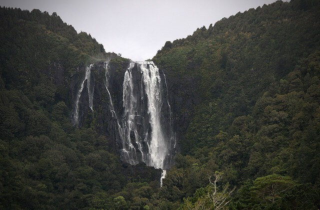
Водопад Дампер (Mount Damper Falls)
Семидесяти четырёх метровый водопад Демпер относится к числу наиболее высоких водопадов Северного острова. Расположенный в отдалении от крупных населённых пунктов, он позволяет любоваться своим прямым, отвесным падением в умиротворённой атмосфере тишины и покоя. Льющаяся по скалам вода создаёт причудливые визуальные эффекты – струящегося серебра, мерцающей всеми красками радуги, субтропического ливня.
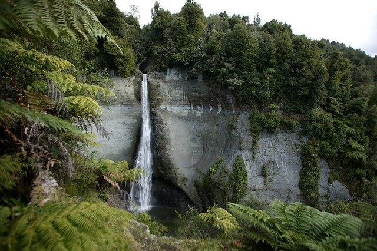
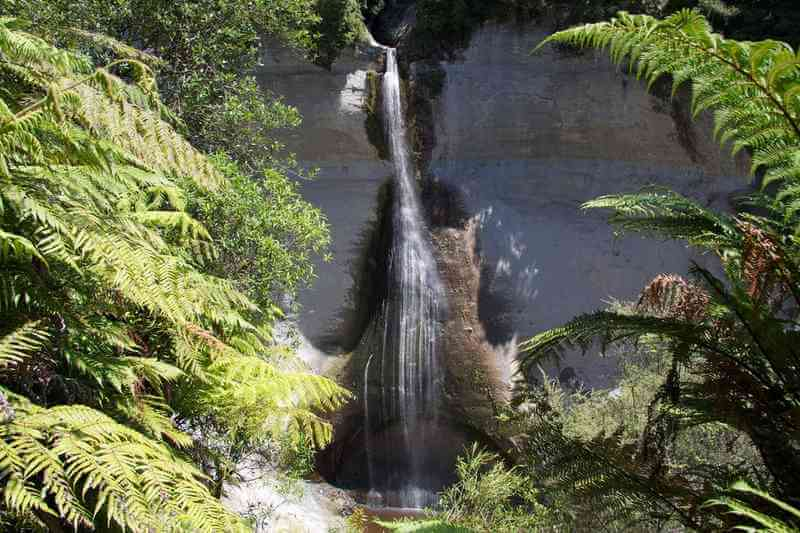
Водопад Бридал Вейл
Водопад Бридал Вейл не зря носит название «Свадебной завесы». Траекторией падения воды он удивительно напоминает лёгкую фату невесты. К подножию водопада ведёт лестница с тремя сотнями ступеней. Любоваться Бридал Вейлом лучше всего издалека. Вблизи, особенно сверху, он кажется совсем крошечным. Между тем, это один из самых живописных и величественных водопадов Новой Зеландии, падающий сквозь большой амфитеатр скал с высоты в 55 метров.
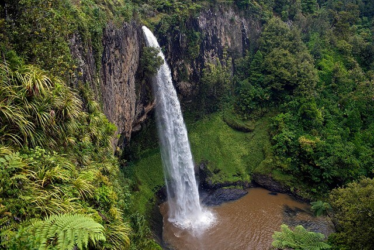
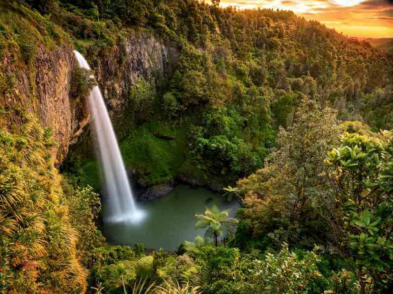
Водопад Уайрере
Водопад Уайрере – самый высокий на Северном острове Новой Зеландии. Вода в нём падает в два этапа с высоты в 153 метра. К водопаду ведёт удобная пешеходная трасса, состоящая из покрытых мхом камней и корней деревьев. Впоследствии она превращается в лестницу, по которой можно добраться на вершину холма, откуда открывается прекрасный вид на местные равнины. Весной Уайрере падает на фоне цветущих абрикосов, окружающих скалистое ложе водопада.
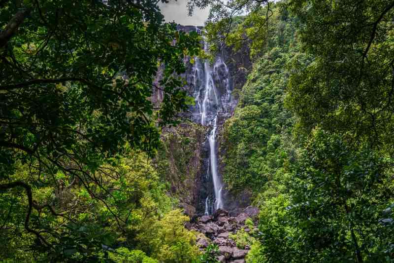
Водопад Хука
Расположенный на территории парка Вайракеи, водопад Хука формируется бурным течением реки Уаикато, резко сужающейся со ста до пятнадцати метров. Каждую секунду через этот участок проходит 220 тысяч литров воды. Наиболее красивый участок водопада Хука находится на последней, одиннадцатиметровой ступени. Речные воды здесь взбиваются в белоснежную, пышную пену и радужные брызги
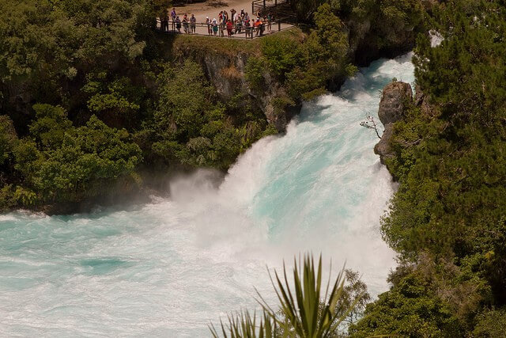
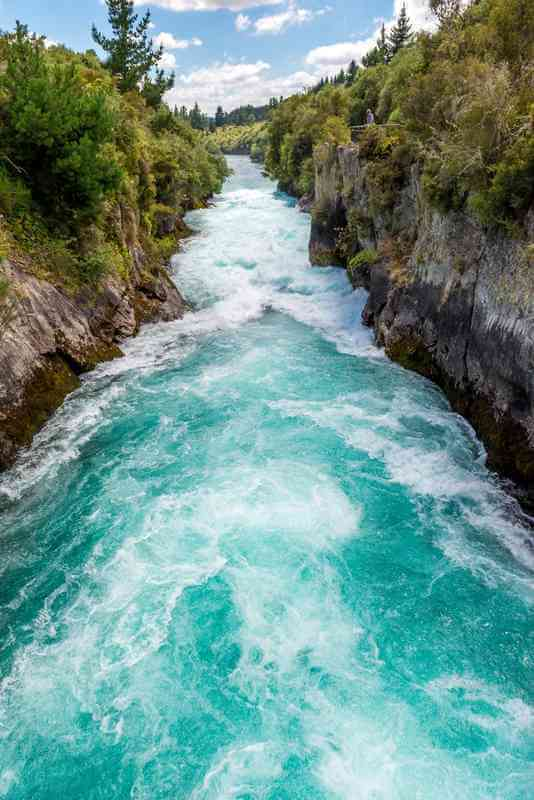
Водопад Марокопа
Один из самых больших (широких) водопадов Северного острова имеет уникальное географическое расположение – он находится вблизи пещерной системы Вайтомо, не имеющей аналогов ни в одном месте Земли. Возраст пещер составляет более двух миллионов лет. В ста пятидесяти горных образованиях обитают сверчки, освещающие пещерный мрак волшебным, синевато-зелёным светом. Полюбоваться Маракопой можно со смотровых площадок, устроенных у подножия и рядом с вершиной водопада.
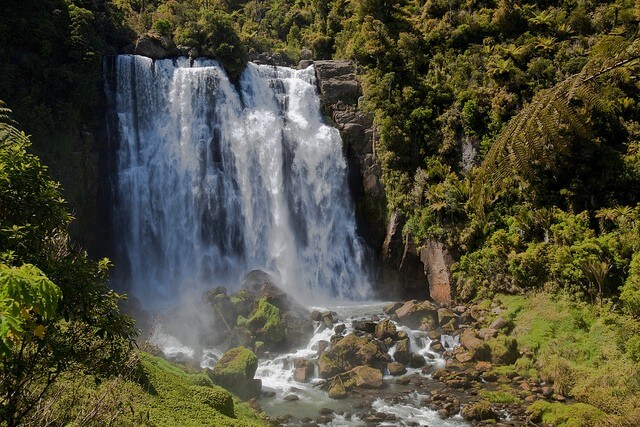
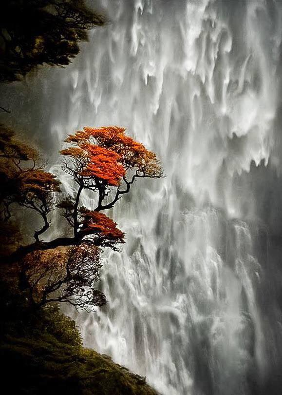
Водопад Боуэн
Водопад Боуэн был назван в честь Диамантины Боуэн – пятой жены новозеландского губернатора Джорджа Боуэна. Он формируется одноимённой рекой, протекающей на Южном острове через крупнейший Национальный парк страны – Фьордленд. Воды Боуэна преодолевают расстояние в 162 метра. Водопад находится в долине одного из красивейших образований страны — фьорда Милфорд-Саунд. Наиболее красив Боуэн весной – в период таяния ледников.
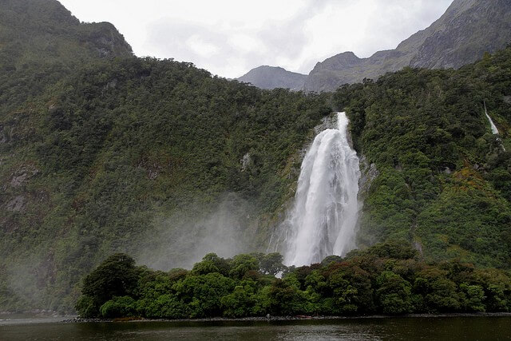
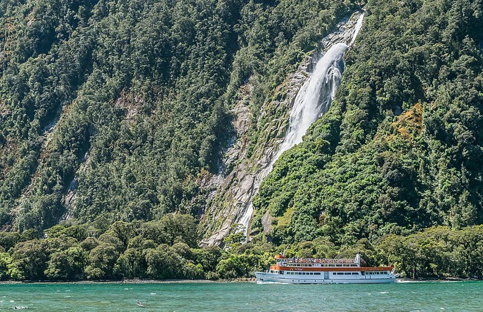
Водопад Стерлинг
Ста пятидесяти пяти метровый водопад Стерлинг находится неподалёку от водопада Боуэн, в заливе Милфорд-Саунд. Мощный поток воды отвесно падает вниз между двух величественных, покрытых буйной зелёной растительностью гор – Слоновьей и Львиной. Самый лучший вид на водопад Стерлинг открывается с круизного судна в период таяния снегов.
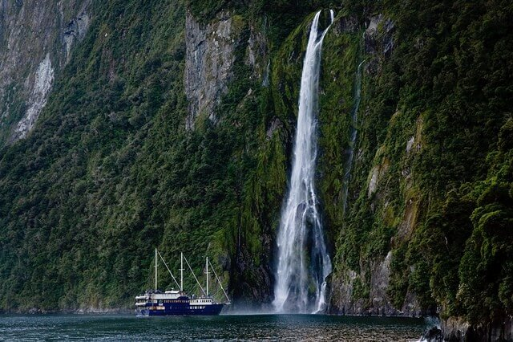
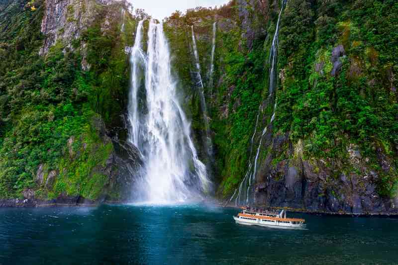
Водопад Гумбольд
Водопад Гумбольд состоит из трёх порогов, общей протяжённостью в 275 метров. Самый крупный поток воды спускается с высоты в 134 метра. Один из самых высоких водопадов Новой Зеландии издаёт оглушительный шум. Добраться до него можно в короткое время через живописный тропический лес. Обзор водопада осуществляется со специально оборудованной смотровой площадки.
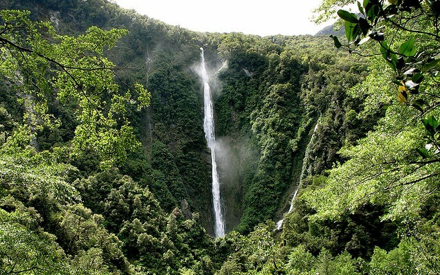
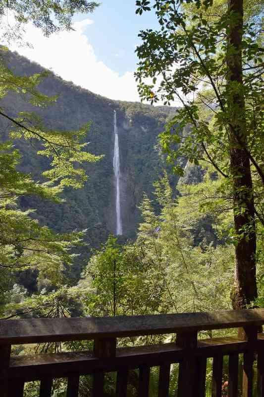
Водопад Девилс Панчбоул
Водопад Девилс Панчбоул представляет собой уникальную систему из двух водных потоков, падающих вначале классическим образом, а затем обвивающихся вокруг скал в виде ленты. Высота водопада – 37 метров. Девилс Панчбоул часто пересыхает, но в период таяния снегов и осадков набирается полноводности и отсвечивает всеми цветами радуги.
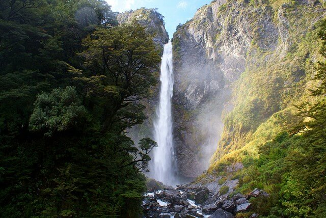
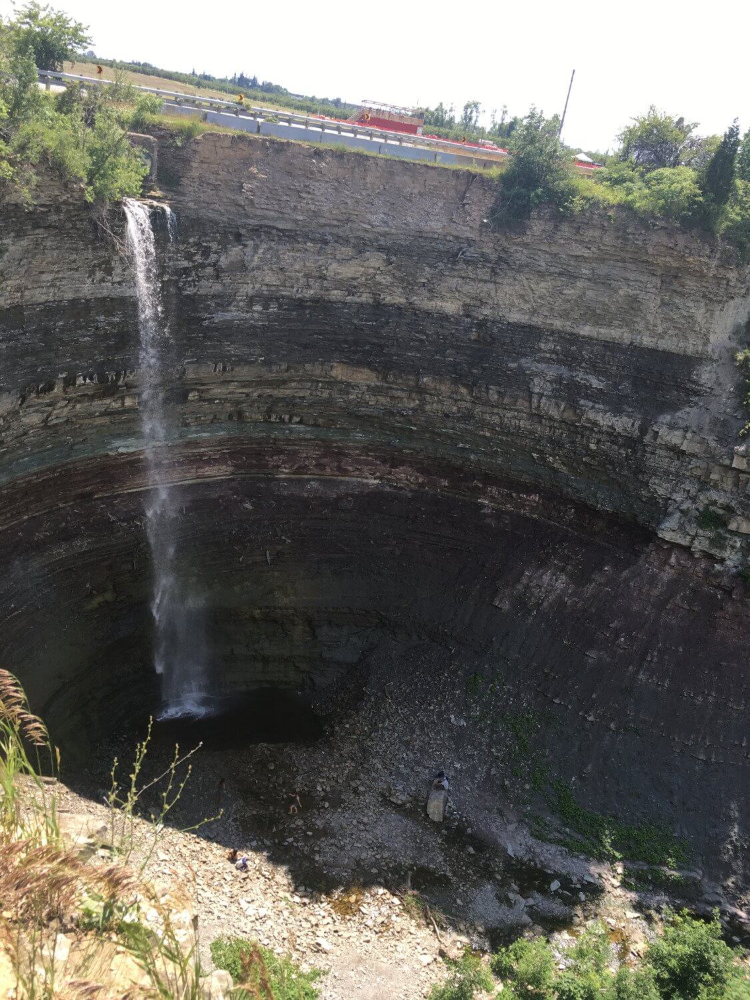
ВВЕРХ